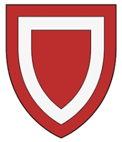

12017835 Ada de Balliol
Blev högst 56 år.

Far:
Mor:
Född:
1245 Barnard Castle, Gainford, Durham, England.
Död:
1301 Lamberton, Mordington,Berwicksshire, Scotland. [1]
Barn:
Personhistoria
1245
Födelse 1245 Barnard Castle, Gainford, Durham, England
1301
Död 1301 Lamberton, Mordington,Berwicksshire, Scotland
[1]
Källor